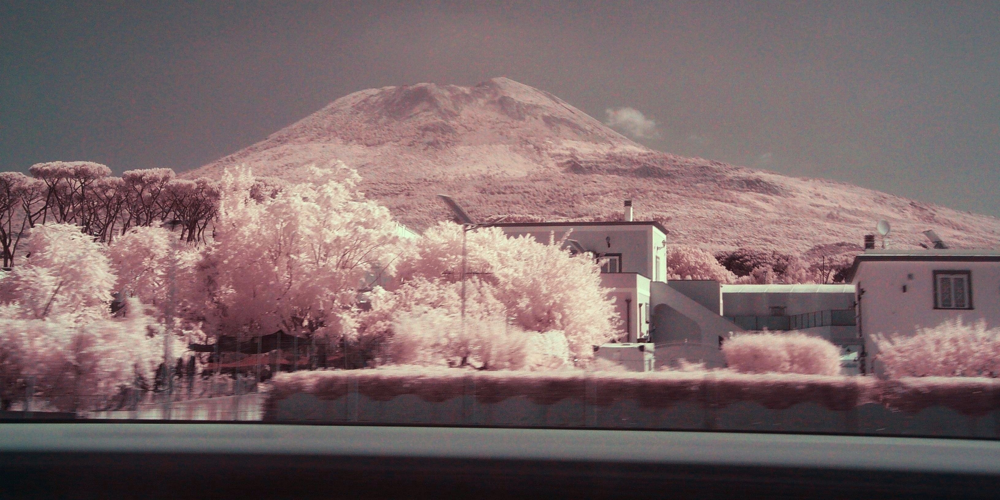
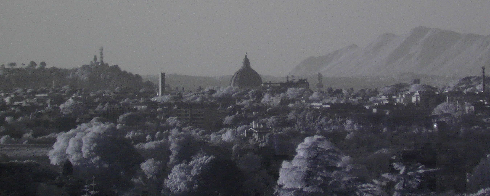

In this short guide I'll explain how near-infrared photography works and how to enjoy this cool technique yourself.
Why take photos in infrared?
Infrared has some very interesting properties:
Plants, grass and trees glow bright in warm or ghostly colors against the background.

People appear as if they were made of smooth wax and have visible black veins.
image from DUNE (2021)
Fog disappears almost completely, so far away mountains will have the same detail as near objects.

Vesuvius, taken by me
What does infrared mean?
Many of us have seen heat images made by thermal cameras, which can detect medium and long infrared waves (a huge range of wavelengths), but that is not the type of infrared we are talking about.
In the context of infrared photography, we deal only with near infrared waves, a type of light with wavelengths just a bit longer than visible light, ranging from roughly 700 to 1000 nanometers (for context, visible light goes from 380 to 700 nm)

Think of infrared as a hidden color to explore that lies just beyond the visible spectrum, one we can't see with the naked eye.
How cameras can see IR just fine, but unmodified ones filter it out
A camera sensor can capture a wider range of light compared to our eyes, but in normal cameras there are some glass layers just above it that filter "unwanted" wavelengths. As a result, cameras produce images that are very similar to what we see.
IR conversion
To make infrared images, it's necessary to remove the IR-cut filter.
This process is called infrared conversion and you can either do it yourself following tutorials (very unsafe), paying companies like Kolari Vision to do it (very expensive) or buy online already converted old cameras (cheaper and safer).
Full spectrum vs IR only
After a conversion, your camera captures both visible and infrared light. This is called full spectrum photography.
It produces surreal color combinations: yellow/orange foliage in daylight, and purple hues during sunset.

zoom on the distant Basilica of St. Peter at sunset
Most photographers prefer to screw an IR-pass filter (typically 720 nm) on the lens, which blocks visible light and lets only infrared light through the sensor.
This produces proper infrared only photos.
How do IR photos appear
When you take a ~720 nm Infrared only photo without adjusting white balance, you get a heavily red-tinted image where you can't quite tell the colors apart.
If you fix white balance (better if done in the camera itself) most of this reddish tint will go away, and you'll be left with a nearly grayscale image with a twist, where all plants, paints and materials that reflect infrared will be bright blue/purple.

same scenery as before but with a 720nm IR-pass filter on
Infrared is shown as blue because cameras assign the color blue to both true blue light and to infrared wavelengths.

image source: researchgate.com
Getting blue skies and pink/red leaves
The palette of unedited IR photos isn't always that great, with blue trees and yellow skies in the day (using a ~720 nm filter).
A possible solution is to swap RGB channels to BRG, so red becomes blue, green becomes red and blue becomes green.
You can do it online on websites like ConvertCase or PopArtStudio.
If you can't find a way to swap RGB channels in your software, be aware that the BRG swap is the same as shifting the image hue by +120° (one third of the color wheel).

In this way, plants will become pink and the sky will be tinted of a pleasing cyan/light blue color.